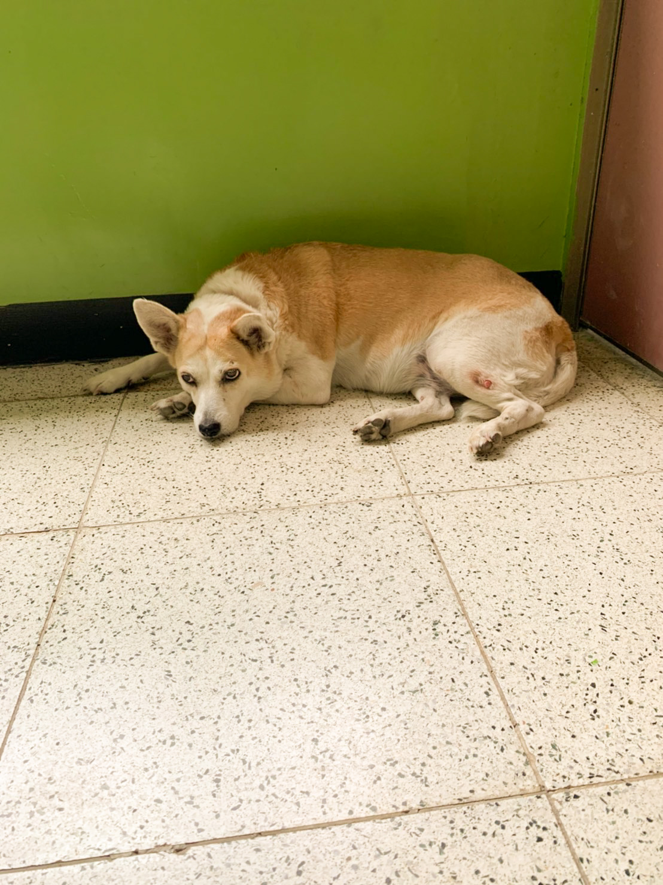
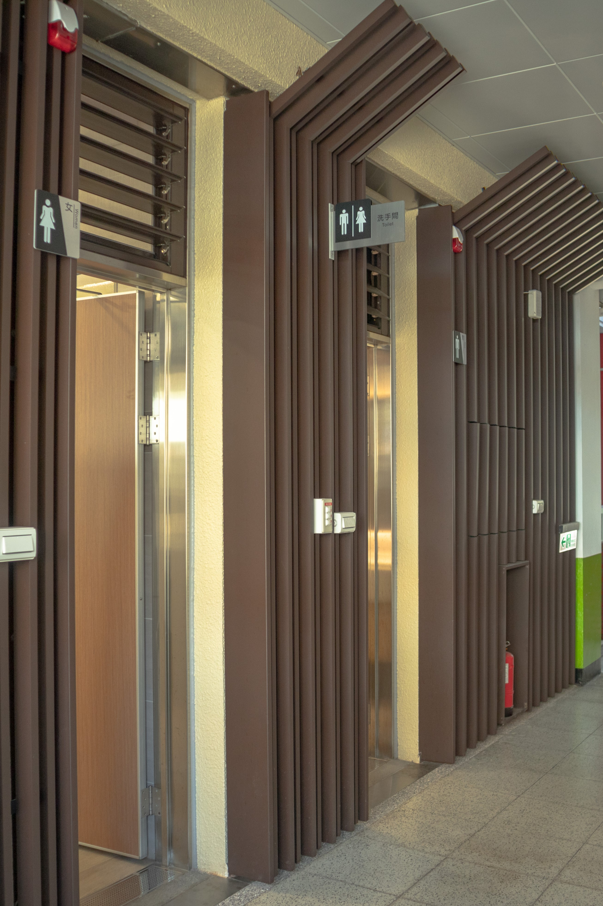
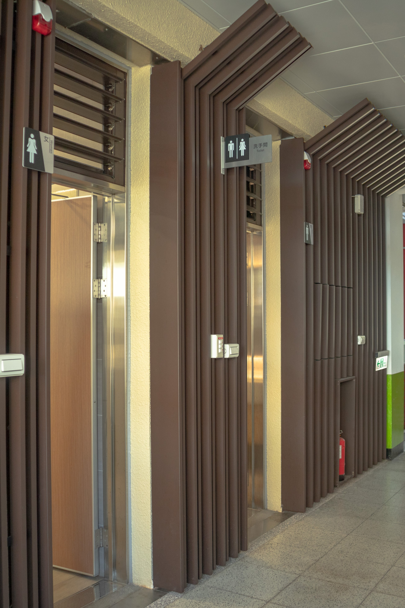
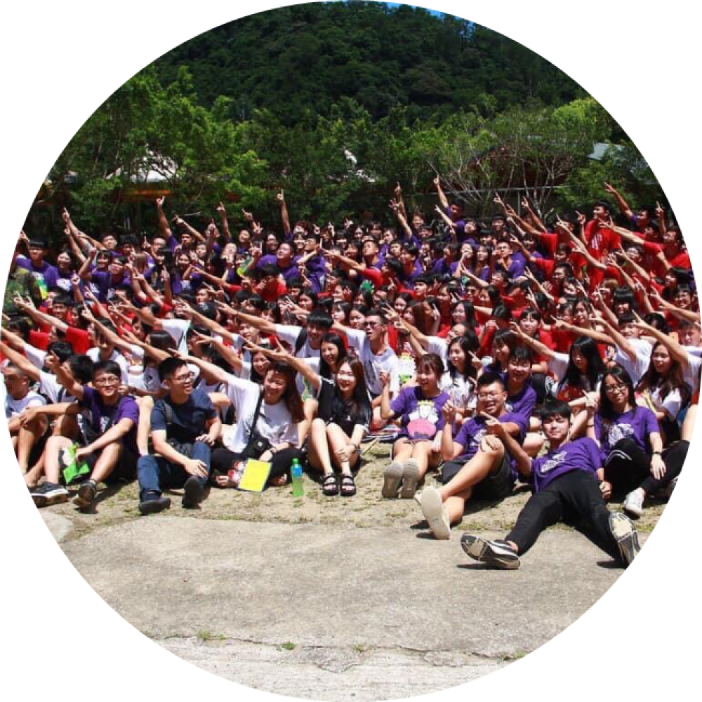
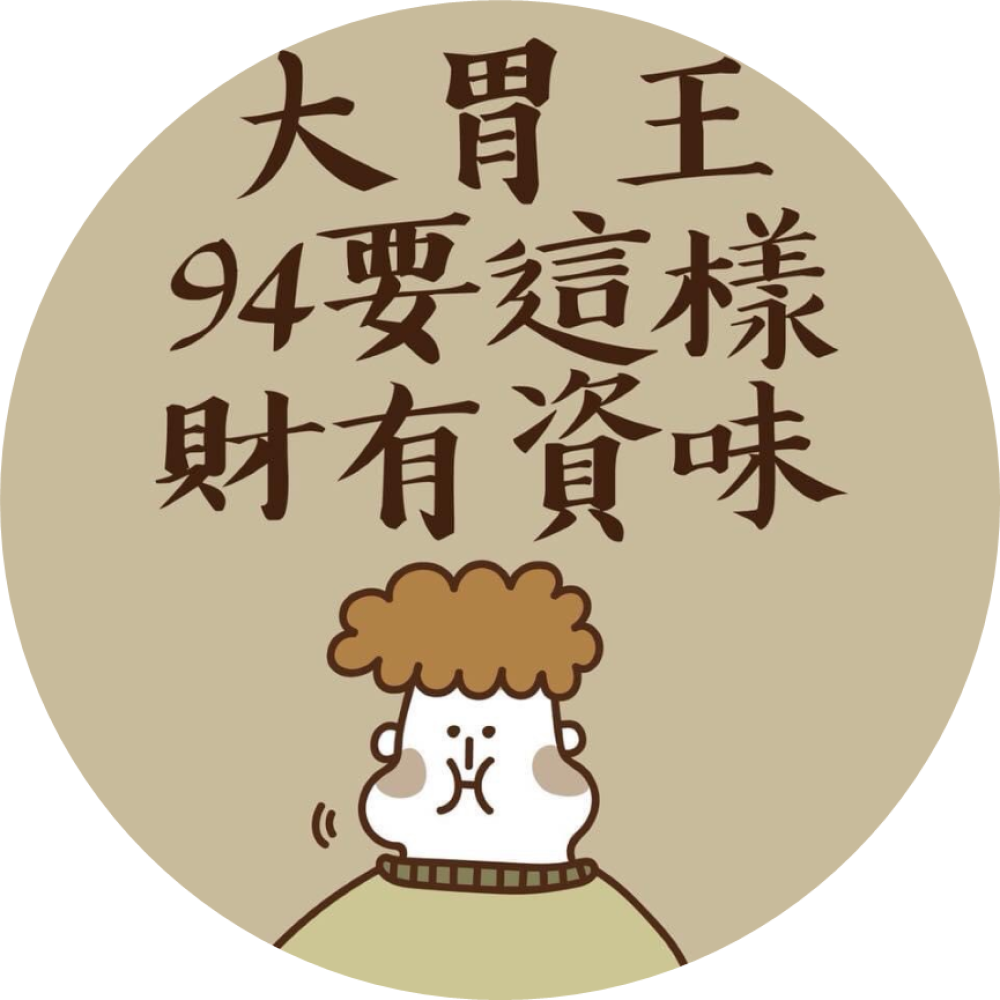
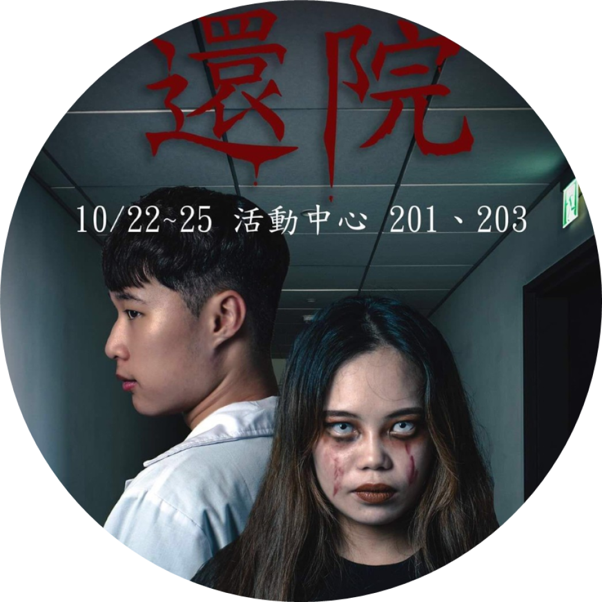

中原資管CYIM
系所介紹


 


中原大學資管系隸屬商學院，1987年由本校校長張光正博士創立並擔任第一任資管系系主任，目前由廖秀麗博士接任系主任。師資容相當堅強，資管系現有教師均有國內外知名大學博士學位，目前有13位專任教師。課程方面，除了程式跟網頁設計外，還有教導商學院專業課目，包含各式各樣的精彩課程，像吳肇銘老師開的「企業概論」以義賣的方式讓我們領悟何為企業運作、卓綵倫老師的「管理學」可以親身體驗到不同的地方做志工。幾個月前，資管樓重新裝修廁所與裝置電梯，系電腦教室更是換了全新的電腦、購買各類正版軟體供學生們使用。

迎新宿營
宿營，新生進入大學的第一個活動。資管系每年在開學前都會舉辦新生宿營活動，想要認識未來的同學及別系的朋友，就來參加學長姐們精心準備的活動「迎新宿營」吧！

大胃王
中原資管系學會有一個特別的活動—大胃王比賽。中原資管每年都會舉辦大胃王比賽，想要參加這個比賽除了要對自己的「胃」有信心之外，還非常考驗你的「手速」喔，每年的大胃王比賽大家總是會搶破頭，畢竟很少有吃不完還能打包的大胃王比賽啊！

資管之夜
剛進到大學中還沒與同學們混熟嗎？系學會主辦的資管之夜就是考驗班級向心力的時候了。資管系每年都會舉辦不同主題的資管之夜，由大一到大三每班一個表演進行比賽，在準備的過程中可以迅速與班上同學們變熟，快來增加班級的向心力，為班上贏得一份榮耀吧！

密室逃脫
想要體驗恐怖的氛圍、與朋友們一同解謎遊玩，卻不想去外面的密室逃脫花大錢嗎？那你一定要來中原資管系學會辦的「密室逃脫」資管系不定期會與他系一同合辦活動，只需要一點零錢、甚至不用花錢，就可以體驗到與外面店家同等級的密室逃脫喔！

電競比賽
說到資管系就與電腦等3C產品脫不了關係，但進入資管系與「它們」的聯繫如果只建立在課業上也太枯燥了吧！資管系每年都會舉辦電競比賽，讓你在課業之餘也可以運用「它們」為你奪得屬於自己的榮耀。